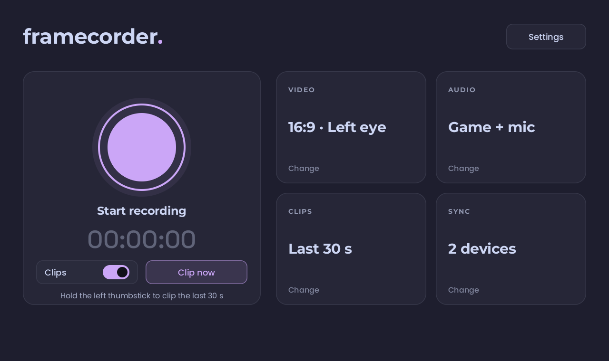
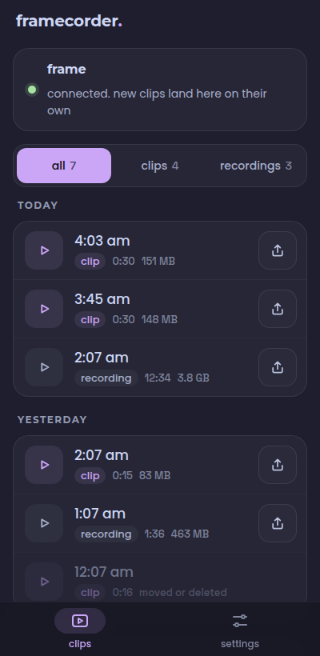

framecorder.
it runs on the headset itself and records what you actually see, without taking the frames your game needs.
get itrecord
what the headset shows, as a normal video. widescreen, square or vertical.
clip
hold the left thumbstick and the last 30 seconds are saved. it's always ready.
sync
pair your phone or computer once. everything lands there over wi-fi, on its own.


get it.
- on the frame, switch to desktop mode and open this page
- copy this, paste it into konsole, press enter
curl -fsSL https://framecorder.coah80.com/install | sh
it walks you through the rest. run it again to update or remove framecorder. over ssh from a computer works too.
rather not use a terminal?
there's a flatpak: open it on the frame and let discover install it, then open framecorder from the app menu once. it can't ask for your password, so it records steamvr's view (16:9, left eye) instead of the panels.
rather build it yourself?
on the headset, with developer mode on:
curl -sSf https://sh.rustup.rs | sh -s -- -y --profile minimal
git clone https://github.com/coah80/framecorder && cd framecorder
./install.sh
sync it.
the app that catches your clips. install it, pair it with your frame once, and everything you record shows up on its own.
on a mac? how to open it the first time
it's signed, but not notarized (apple charges for that), so macos blocks it the first time. only once.
- open the dmg, drag framecorder into applications
- open it. mac says it can't verify it. hit done, not move to trash
- system settings, privacy & security, scroll down, open anyway, type your password
- when it asks to find devices on your local network, allow it. that's how it finds your frame
or, in a terminal:
xattr -dr com.apple.quarantine /Applications/framecorder.app
free, and donationware.
framecorder costs nothing and never will. donations are what keep it worked on. if it's useful to you, chip in so it stays that way.
donate on ko-fi